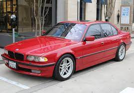
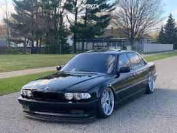
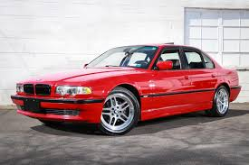
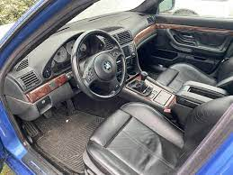
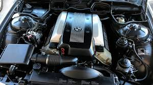

BMW E38 7 Series
A beautiful and timeless design






Here's the history of the BMW 7 Series E38:
- The third generation of BMW's 7 Series luxury edition.
- Produced between the years of April 1994 - July 2001.
- The E38 replaced the E32 7 Series and two wheelbase lengths were available- short(i) and long(iL).
- It was the first car available with curtain airbags.
- It was also the first European car to offer satellite navigation and the first BMW to offer an in-built television.
- The 2001 BMW E38 is widely considered the best 7 Series ever made!
- The E38 came to the U.S. in two engine types: The 740i or 740iL- with a 4.4L V8 engine and the 750iL- with a 5.4L V12 engine. The 750iL is the 7 Series' flagship.
- The E38 was truly ahead of it's time, boasting traction control, headlight washers, and auto-leveling low beam xenon HID headlamps. Active Comfort Seats, introduced in 1998, improved comfort and reduced fatique for the driver and front passenger. This system uses two fluid-filled bladders which alternate in height.
- The E38 had a couple other features that were remarkable for a 20 year old car, rain-sensing wipers, heated rear seats, and heated steering wheel.
- The 2001 model added as a standard equipment the Motorola StarTAC or TimePort mobile phone.
- Contributing to the E38's popularity was it's appearance in several films such as Tomorrow Never Dies, Enemy of the State, Invictus, The Transporter, Live Free or Die Hard, and Transformers.
- The successor to the classic E38 was the BMW 7 Series E65.